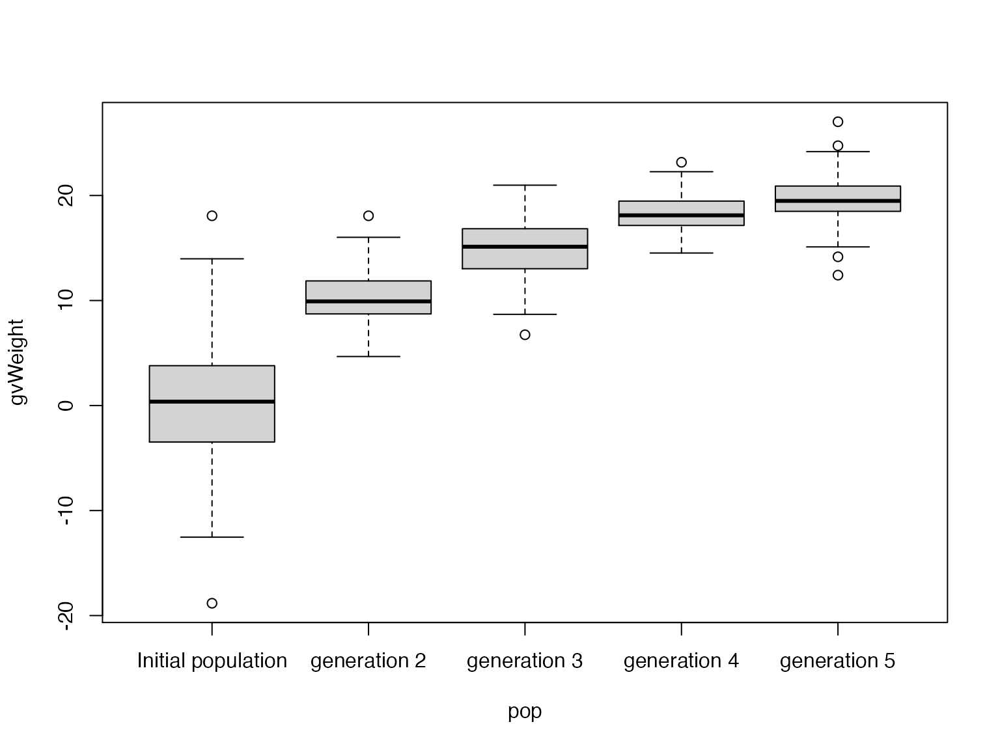

Introduction
breedSimulatR is R package providing classes and
functions to simulate breeding schemes. It have been design to be
intuitive and easy to use.
The Object-Oriented Programming (OOP) system used in this package is R6. Information about R6 OOP system can be found at chapter 14 of Hadley Wickham’s book Advanced R.
This vignette shows how to use the breedSimulatR package
thought basic examples.
breedSimulatR’s classes
First let’s have a look on the main classes provided by
breedSimulatR:
-
Specie: which store specific information about the studied specie like number of chromosomes, length of chromosomes in base pairs and centimorgans, their names -
SNPinfo: which store specific information about a set of SNP markers like physical positions, linkage map position, IDs -
individuals: which store specific information about an individual like its parents, its haplotype. This class have also a method to generate gametes. -
population: which store specific information several individuals like their genotypes, allele frequency -
trait: which store specific information about a trait like the QTN involved, the QTN’s effects -
phenotyper: This object is used to simulate phenotyping experiments and store store some specific information like the variance of the environmental effect and have method to phenotype individuals. Several phenotyper can be created to represents several environments.
A exhaustive list can be fond on the package’s web site.
Example data
The package contains some example data that we will use for these
examples. These data are stored in the variable exampleData
of the package.
library(breedSimulatR)
exampleDataexampleData is a list containing 3 elements:
-
exampleData$genotypes: contains some genotypic. -
exampleData$snpCoord: contains the coordinates of the SNP markers. -
exampleData$snpEffects: contains the “true” effects of the SNP markers for a quantitative trait based on an additive architecture.
It represents information about .nInd individuals and
.nSNP markers on .nChr.
These data are fictitious and come from the serious game “PlantBreedGame” (Flutre, Diot, and David 2019).
Simulation Initialization
In order to run some simulation, we must first initialize some
objects: a specie, SNP information (SNPinfo),
a population, some traits and a
phenotyper.
Specie specification
The example’s specie, let’s name it Statisticae exempli, have 10 chromosomes with the same length of around 1e+06 base pairs for 100 centimorgans.
The function specie$new will create a new
specie object specie_statEx.
# create specie object
specie_statEx <- specie$new(
specName = "Statisticae exempli",
nChr = 10,
lchr = 1e6,
lchrCm = 100
)
#> A new species has emerged: Statisticae exempli !
print(specie_statEx)
#> Name: Statisticae exempli
#> Number of Chromosomes: 10
#> Ploidy: 2
#> Chromosome length:
#> chrNames chrLength chrLengthCm
#> Chr01 Chr01 1e+06 100
#> Chr02 Chr02 1e+06 100
#> Chr03 Chr03 1e+06 100
#> Chr04 Chr04 1e+06 100
#> Chr05 Chr05 1e+06 100
#> Chr06 Chr06 1e+06 100
#> Chr07 Chr07 1e+06 100
#> Chr08 Chr08 1e+06 100
#> [ reached 'max' / getOption("max.print") -- omitted 2 rows ]SNP specification
In order to simulate the crossing between individuals, we need
information about the positions of the genotypic markers used in the
simulation. We will create for that the object SNPinfo
using the function SNPinfo$new.
-
SNPcoord: adata.framewith one line per marker and 4 columns:-
chr: Chromosome holding the SNP -
physPos: SNP physical position on the chromosome -
linkMapPos: SNP linkage map position on the chromosome -
SNPid: SNP’s IDs
-
-
specie: an object of class specie.
We can create the SNPinfo object using
exampleData$snpCoord which is a data.frame
matching the requirement of SNPinfo$new:
# data preview
head(exampleData$snpCoord)
#> chr physPos linkMapPos SNPid
#> 2 Chr01 937638 86.81546 snp03760
#> 6 Chr01 654763 56.51842 snp02674
#> 10 Chr01 181658 30.62157 snp00721
#> 18 Chr01 230126 35.47120 snp00948
#> 26 Chr01 420637 46.98455 snp01620
#> 29 Chr01 467620 48.80905 snp01790
# create SNPinfo object
SNPs <- SNPinfo$new(
SNPcoord = exampleData$snpCoord,
specie = specie_statEx
)
print(SNPs)
#> specie: Statisticae exempli
#> 3333 Markers on 10 chromosomes :
#> Chr01 Chr02 Chr03 Chr04 Chr05 Chr06 Chr07 Chr08 Chr09 Chr10
#> 415 247 425 322 381 269 238 355 342 339
#> SNPcoord:
#> chr SNPid physPos linkMapPos
#> snp00006 Chr01 snp00006 2068 0.4911687
#> snp00009 Chr01 snp00009 2708 0.6423784
#> snp00011 Chr01 snp00011 2782 0.6598378
#> snp00018 Chr01 snp00018 4159 0.9838113
#> snp00026 Chr01 snp00026 6917 1.6275084
#> snp00031 Chr01 snp00031 7814 1.8353769
#> [ reached 'max' / getOption("max.print") -- omitted 3327 rows ]Population initialization
We can now generate an initial population from genotypic data. We
will use the function createPop. This function will create
a population object from at least two arguments:
-
geno: adata.frameof the genotypic data of homozygotes individuals -
SNPinfo: aSNPinfoobject containing the information related to the markers of the genotypic data
We can create the initial population object using
exampleData$genotypes which is a data.frame
matching the requirement of geno:
# data preview
exampleData$genotypes[1:3, 1:5]
#> snp00006 snp00009 snp00011 snp00018 snp00026
#> Coll0001 2 2 2 0 2
#> Coll0002 0 2 2 2 0
#> Coll0003 2 2 2 0 2
# create population object
initPop <- createPop(
geno = exampleData$genotypes,
SNPinfo = SNPs,
popName = "Initial population"
)
print(initPop)
#> Population: Initial population
#> Species: Statisticae exempli
#> Number of individuals: 100Traits and phenotyping initialization
In order to do some phenotyping simulation, we need to create a trait.
We will use for that the example data
exampleData$snpEffects containing the “true” effects of
each QTN.
exampleData$snpEffects[1:5]
#> snp00006 snp00009 snp00011 snp00018 snp00026
#> 0.05110930 0.08099233 0.18353259 0.02819434 0.14413695
weight <- trait$new(
name = "Weight",
qtn = names(exampleData$snpEffects),
qtnEff = exampleData$snpEffects
)
print(weight)
#> trait: Weight
#> quantitative trait
#> number of QTN: 3333This trait object contain the genetic effects but in order to simulate phenotyping experiments, we should also include some environmental effects.
The environmental effect will be stored in the
phenotyper object. Here we create a phenotyper for which
the mean of the phenotypic value is equal to 100 and the initial
population have an heritability of 0.6, and the cost for phenotyping one
plot is 150.
phenolab <- phenotyper$new(
name = "Pheno lab",
traits = weight,
plotCost = 150,
mu = 100,
he = 0.6,
pop = initPop
)
print(phenolab)
#> Phenotyper: Pheno lab
#> Traits: Weight
#> μ: 100
#> σ2: 25.6340237938445
#> Phenotyping cost (per plot): 150
#> timeEffect:Breeding simulation
Now the simulation is setup, we can write the simulation code using the objects defined previously. For this example we will simulate a simple breeding scheme consisting in phenotyping individuals and selecting those with the highest phenotypic values and cross them together.
phenotyping individuals
First, let’s phenotype the initial population
set.seed(1809) # set seed
pheno <- phenolab$trial(pop = initPop, rep = 3)
pheno$data
#> ind Weight rep phenotyper
#> 1 Coll0001 95.72423 1 Pheno lab
#> 2 Coll0001 102.72287 2 Pheno lab
#> 3 Coll0001 96.19940 3 Pheno lab
#> 4 Coll0002 105.09960 1 Pheno lab
#> 5 Coll0002 102.24307 2 Pheno lab
#> 6 Coll0002 102.28673 3 Pheno lab
#> [ reached 'max' / getOption("max.print") -- omitted 294 rows ]
pheno$cost
#> [1] 45000The trial method of the phenotyper class
return a list:
-
data: containing adata.frameof the phenotypic data -
cost: a numeric value representing the cost of the trial.
Selecting individuals
Here we will just select the individuals with the highest phenotypic values.
# aggregate result by individual
aggPheno <- aggregate(Weight ~ ind, data = pheno$data, mean)
# sort result by "Weight" in ascending order
aggPheno <- aggPheno[order(aggPheno$Weight, decreasing = T), ]
# set selection intensity
i <- 0.1
# calculated number of selected individuals
nSelected <- floor(initPop$nInd * i)
# get names of selected individuals
selectedInds <- aggPheno$ind[1:nSelected]
selectedInds
#> [1] "Coll0068" "Coll0008" "Coll0074" "Coll0020" "Coll0045" "Coll0016"
#> [7] "Coll0037" "Coll0036" "Coll0079" "Coll0046"Crossing individuals
In order to cross the individuals we need to create a crossing table specifying:
- the first parent:
ind1 - the second parent:
ind2 - number of progenies for these two parents:
n - name of the progenies:
name
In this example we will randomly cross the individuals together to
create 100 new individuals. The function randomMate can
generate such table.
crossTable <- randomMate(selectedInds, 100, paste0("gen-2_", seq(1:100)))
crossTable
#> ind1 ind2 n names
#> 1 Coll0079 Coll0046 1 gen-2_1
#> 2 Coll0037 Coll0016 1 gen-2_2
#> 3 Coll0045 Coll0068 1 gen-2_3
#> 4 Coll0036 Coll0074 1 gen-2_4
#> 5 Coll0045 Coll0074 1 gen-2_5
#> 6 Coll0068 Coll0008 1 gen-2_6
#> [ reached 'max' / getOption("max.print") -- omitted 94 rows ]Now we have specified the crosses to do, the function
makeCrosses will create new individuals and return them as
a list:
newIndsList <- makeCrosses(crossTable, initPop)We can integrate these new individuals in a new population:
newPop <- population$new(
name = "generation 2",
inds = newIndsList,
verbose = FALSE
)Automatisation
We have created one new generation, let’s create 3 more generations other generation automatically integrating the code above in one loop.
# create a list with all our populations
nGen <- 5 # total number of generation
popList <- vector(mode = "list", length = nGen)
popList[[1]] <- initPop
popList[[2]] <- newPop
nNew <- 100 # number of new individual for each generation
for (gen in 3:nGen) {
print(gen)
# phenotyping
pheno <- phenolab$trial(pop = popList[[gen - 1]], rep = 3)
# select individuals
aggPheno <- aggregate(Weight ~ ind, data = pheno$data, mean)
aggPheno <- aggPheno[order(aggPheno$Weight, decreasing = T), ]
nSelected <- floor(initPop$nInd * i)
selectedInds <- aggPheno$ind[1:nSelected]
# cross individuals
crossTable <- randomMate(
inds = selectedInds,
n = nNew,
names = paste0("gen-", gen, "_", seq(1:nNew))
)
newIndsList <- makeCrosses(crossTable, popList[[gen - 1]])
# create new population
popList[[gen]] <- population$new(
name = paste("generation", gen),
inds = newIndsList,
verbose = FALSE
)
}
#> [1] 3
#> [1] 4
#> [1] 5
popList
#> [[1]]
#> Population: Initial population
#> Species: Statisticae exempli
#> Number of individuals: 100
#>
#> [[2]]
#> Population: generation 2
#> Species: Statisticae exempli
#> Number of individuals: 100
#>
#> [[3]]
#> Population: generation 3
#> Species: Statisticae exempli
#> Number of individuals: 100
#>
#> [[4]]
#> Population: generation 4
#> Species: Statisticae exempli
#> Number of individuals: 100
#>
#> [[5]]
#> Population: generation 5
#> Species: Statisticae exempli
#> Number of individuals: 100Let’s look at the true genetic values of each population:
# create data.table with all genetic values
GVs <- do.call(rbind, lapply(popList, function(pop) {
data.frame(gvWeight = weight$gv(pop), pop = pop$name)
}))
# set pop variable as factor
GVs$pop <- factor(GVs$pop, levels = unique(GVs$pop))
# create boxplot
boxplot(gvWeight ~ pop, data = GVs)
Conclusion
We have build an algorithm for simulating a simple breeding camping.
In order to create more advance simulation, users can create their own
functions for selecting, mating individuals using the classes provided
by breedSimulatR. An exhaustive list of the fields and
methods available for each class can be found in the documentation of
the package and on the
package’s web site.